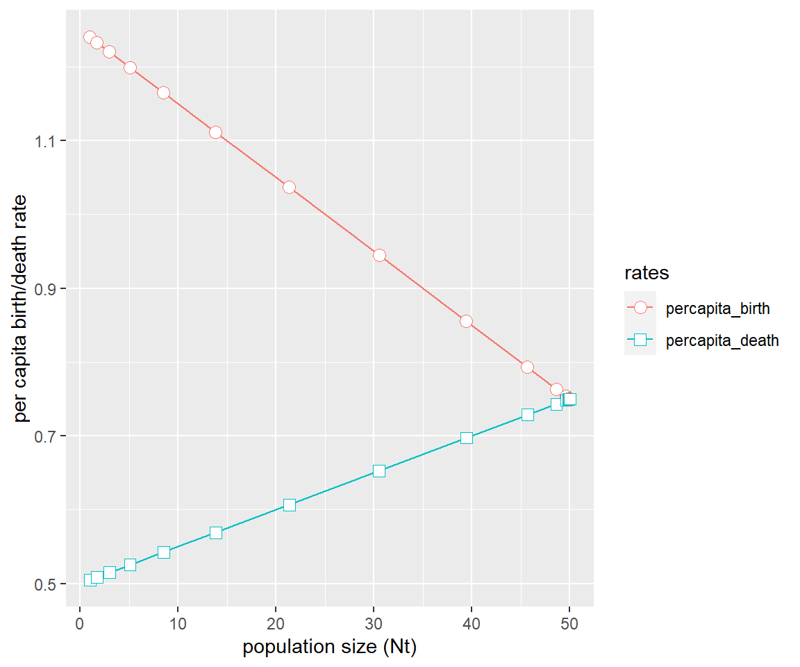
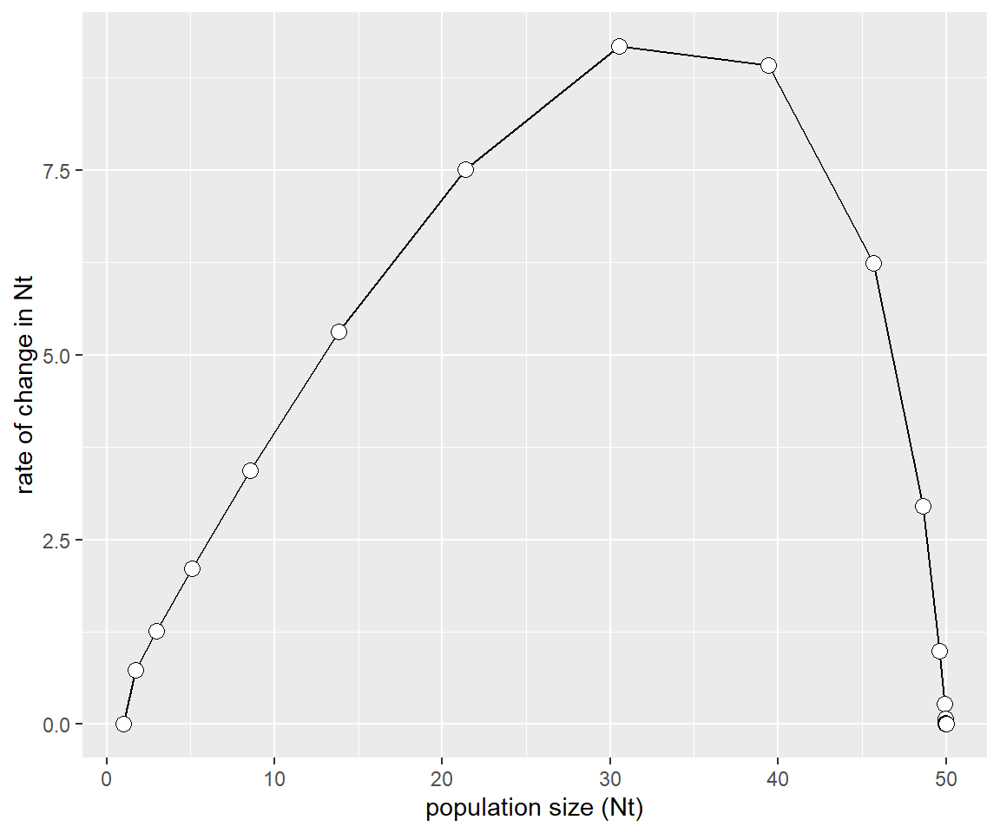

8 Trees vs Pollution
You will need to install a few R packages to be able to visualize your data. Remember you only need to do this once, ideally just run it directly in the console.
install.packages("remotes")
install.packages("glue")
install.packages("plyr")
library(remotes)
remotes::install_github("ropensci/osmdata")Now let’s load our packages.
# load libraries
library(osmdata)
library(plyr)
library(tidyverse)
library(knitr)
library(glue)
library(lubridate)
library(janitor)8.1 Central Question
[Make changes requested in your google doc and add here]
8.2 Hypothesis
[Make changes requested in your google doc and add here]
8.3 Objectives
[Make changes requested in your google doc and add here]
8.4 Methods
8.4.1 Study Design
[Make changes requested in your google doc and add here]
8.4.2 Data Collection and Processing
[Make changes requested in your google doc and add here]
8.4.3 Data Analysis
Pull in the pollution data (the CSV files should be the only ones in the pollution directory for this to work properly).
# set data path
path <- "data/pollution"
# list with all txt files in data directory
list.filenames <- list.files(path = path)
# empty list to load files into
list.data <- list()
# loop to read in data files
for (i in list.filenames){
file <- as.character(glue("{path}/{i}"))
list.data[[i]] <- read_delim(file,
delim = ",", skip = 1)
}
pollution <- ldply(list.data, data.frame) %>% # combine into single data frame
clean_names() # clean up columns
write_delim(pollution, "data/pollution_raw.txt", delim = "\t")Take a look at that data frame - we will need to clean it up so that we only have the information we want and only include data points for which we have lat/long information. We also want to add the locations for each data set, we can do this based on the name of the file we imported.
pollution <- pollution %>%
select(id, latitude, longitude, date, time, temperature, humidity, pm2_5) %>%
filter(latitude > 0 & longitude > 0 & date > 0) %>%
separate(date, into = c("year", "month", "day"), sep = c(4, 6)) %>%
separate(time, into = c("hr", "min", "sec"), sep = c(2, 4)) %>%
filter(!min == "+0") %>%
mutate(longitude = -1*longitude) %>%
filter(year == "2022" & month %in% c("10") & day %in% c("18", "19", "25")) %>%
mutate(id = case_when(id %in% c("CE30034.CSV", "CE30035.CSV", "CE30042.CSV") ~ "Bakersville Elem",
id %in% c("D2A0478.CSV", "D2A0480.CSV", "D2A0481.CSV", "D2A0482.CSV") ~ "Roy Park",
id %in% c("E390128.CSV", "E390129.CSV", "E390130.CSV") ~ "Veteran's Park")) %>%
filter(!is.na(id))We can get the summary statistics for each day and location using group_by() and summarize().
pollution %>%
group_by(day, id) %>%
summarize(mean = mean(pm2_5),
max = max(pm2_5),
min = min(pm2_5))## # A tibble: 9 x 5
## # Groups: day [3]
## day id mean max min
## <chr> <chr> <dbl> <dbl> <dbl>
## 1 18 Bakersville Elem 4.28 5.63 3.56
## 2 18 Roy Park 4.58 5.82 3.93
## 3 18 Veteran's Park 4.69 11.7 4.1
## 4 19 Bakersville Elem 2.23 3.29 1.66
## 5 19 Roy Park 1.89 3.57 1.36
## 6 19 Veteran's Park 2.74 29.0 1.9
## 7 25 Bakersville Elem 8.74 25.5 4.66
## 8 25 Roy Park 6.41 29.5 5.01
## 9 25 Veteran's Park 5.09 9.36 3.68And we can compare those distributions using boxplots.
ggplot(pollution, aes(x = day, y = pm2_5, fill = id)) +
geom_boxplot()
And we should test if our differences are significant. Let’s start by running and ANOVA to see if there is significant heterogeneity in the data set.
Our null hypothesis is “there is no difference”, we will test to see if there is significant difference among locations, among days, and among the interaction of day and location.
# run anova, with interaction term
anova <- aov(pm2_5 ~ id * day, pollution)
summary(anova)## Df Sum Sq Mean Sq F value Pr(>F)
## id 2 1526 763 227.2 <2e-16 ***
## day 2 58309 29155 8679.9 <2e-16 ***
## id:day 4 7958 1989 592.3 <2e-16 ***
## Residuals 13729 46114 3
## ---
## Signif. codes: 0 '***' 0.001 '**' 0.01 '*' 0.05 '.' 0.1 ' ' 1Now we should run an Tukey Honest Significant Difference test to look at pairwise comparisons among days, locations, and day/location interactions. Tukey’s HSD adjusts for multiple comparisons being made.
# run post-hoc Tukey HSD adjust for multiple comparisons
TukeyHSD(anova)## Tukey multiple comparisons of means
## 95% family-wise confidence level
##
## Fit: aov(formula = pm2_5 ~ id * day, data = pollution)
##
## $id
## diff lwr upr p adj
## Roy Park-Bakersville Elem -0.3962500 -0.4785620 -0.3139380 0
## Veteran's Park-Bakersville Elem -0.9035295 -1.0055208 -0.8015382 0
## Veteran's Park-Roy Park -0.5072795 -0.6156245 -0.3989345 0
##
## $day
## diff lwr upr p adj
## 19-18 -2.220447 -2.311979 -2.128914 0
## 25-18 2.824741 2.737110 2.912372 0
## 25-19 5.045187 4.954342 5.136032 0
##
## $`id:day`
## diff lwr upr
## Roy Park:18-Bakersville Elem:18 0.2994537 0.1137592 0.4851483
## Veteran's Park:18-Bakersville Elem:18 0.4135696 0.1833605 0.6437787
## Bakersville Elem:19-Bakersville Elem:18 -2.0475092 -2.2160167 -1.8790017
## Roy Park:19-Bakersville Elem:18 -2.3915302 -2.5988670 -2.1841935
## Veteran's Park:19-Bakersville Elem:18 -1.5411128 -1.7741835 -1.3080422
## Bakersville Elem:25-Bakersville Elem:18 4.4662490 4.2979745 4.6345234
## Roy Park:25-Bakersville Elem:18 2.1352026 1.9590585 2.3113467
## Veteran's Park:25-Bakersville Elem:18 0.8156400 0.5804594 1.0508207
## Veteran's Park:18-Roy Park:18 0.1141159 -0.1305274 0.3587591
## Bakersville Elem:19-Roy Park:18 -2.3469629 -2.5347098 -2.1592161
## Roy Park:19-Roy Park:18 -2.6909840 -2.9142386 -2.4677293
## Veteran's Park:19-Roy Park:18 -1.8405665 -2.0879044 -1.5932287
## Bakersville Elem:25-Roy Park:18 4.1667952 3.9792576 4.3543329
## Roy Park:25-Roy Park:18 1.8357489 1.6411189 2.0303788
## Veteran's Park:25-Roy Park:18 0.5161863 0.2668592 0.7655135
## Bakersville Elem:19-Veteran's Park:18 -2.4610788 -2.6929466 -2.2292111
## Roy Park:19-Veteran's Park:18 -2.8050999 -3.0665504 -2.5436493
## Veteran's Park:19-Veteran's Park:18 -1.9546824 -2.2369762 -1.6723886
## Bakersville Elem:25-Veteran's Park:18 4.0526793 3.8209810 4.2843777
## Roy Park:25-Veteran's Park:18 1.7216330 1.4841575 1.9591084
## Veteran's Park:25-Veteran's Park:18 0.4020704 0.1180321 0.6861088
## Roy Park:19-Bakersville Elem:19 -0.3440210 -0.5531979 -0.1348442
## Veteran's Park:19-Bakersville Elem:19 0.5063964 0.2716873 0.7411055
## Bakersville Elem:25-Bakersville Elem:19 6.5137582 6.3432217 6.6842947
## Roy Park:25-Bakersville Elem:19 4.1827118 4.0044054 4.3610181
## Veteran's Park:25-Bakersville Elem:19 2.8631493 2.6263448 3.0999537
## Veteran's Park:19-Roy Park:19 0.8504174 0.5864437 1.1143911
## Bakersville Elem:25-Roy Park:19 6.8577792 6.6487901 7.0667683
## Roy Park:25-Roy Park:19 4.5267328 4.3113566 4.7421090
## Veteran's Park:25-Roy Park:19 3.2071703 2.9413318 3.4730088
## Bakersville Elem:25-Veteran's Park:19 6.0073618 5.7728200 6.2419036
## Roy Park:25-Veteran's Park:19 3.6763154 3.4360649 3.9165659
## Veteran's Park:25-Veteran's Park:19 2.3567529 2.0703903 2.6431154
## Roy Park:25-Bakersville Elem:25 -2.3310464 -2.5091325 -2.1529603
## Veteran's Park:25-Bakersville Elem:25 -3.6506089 -3.8872476 -3.4139703
## Veteran's Park:25-Roy Park:25 -1.3195625 -1.5618605 -1.0772646
## p adj
## Roy Park:18-Bakersville Elem:18 0.0000202
## Veteran's Park:18-Bakersville Elem:18 0.0000009
## Bakersville Elem:19-Bakersville Elem:18 0.0000000
## Roy Park:19-Bakersville Elem:18 0.0000000
## Veteran's Park:19-Bakersville Elem:18 0.0000000
## Bakersville Elem:25-Bakersville Elem:18 0.0000000
## Roy Park:25-Bakersville Elem:18 0.0000000
## Veteran's Park:25-Bakersville Elem:18 0.0000000
## Veteran's Park:18-Roy Park:18 0.8794484
## Bakersville Elem:19-Roy Park:18 0.0000000
## Roy Park:19-Roy Park:18 0.0000000
## Veteran's Park:19-Roy Park:18 0.0000000
## Bakersville Elem:25-Roy Park:18 0.0000000
## Roy Park:25-Roy Park:18 0.0000000
## Veteran's Park:25-Roy Park:18 0.0000000
## Bakersville Elem:19-Veteran's Park:18 0.0000000
## Roy Park:19-Veteran's Park:18 0.0000000
## Veteran's Park:19-Veteran's Park:18 0.0000000
## Bakersville Elem:25-Veteran's Park:18 0.0000000
## Roy Park:25-Veteran's Park:18 0.0000000
## Veteran's Park:25-Veteran's Park:18 0.0003873
## Roy Park:19-Bakersville Elem:19 0.0000121
## Veteran's Park:19-Bakersville Elem:19 0.0000000
## Bakersville Elem:25-Bakersville Elem:19 0.0000000
## Roy Park:25-Bakersville Elem:19 0.0000000
## Veteran's Park:25-Bakersville Elem:19 0.0000000
## Veteran's Park:19-Roy Park:19 0.0000000
## Bakersville Elem:25-Roy Park:19 0.0000000
## Roy Park:25-Roy Park:19 0.0000000
## Veteran's Park:25-Roy Park:19 0.0000000
## Bakersville Elem:25-Veteran's Park:19 0.0000000
## Roy Park:25-Veteran's Park:19 0.0000000
## Veteran's Park:25-Veteran's Park:19 0.0000000
## Roy Park:25-Bakersville Elem:25 0.0000000
## Veteran's Park:25-Bakersville Elem:25 0.0000000
## Veteran's Park:25-Roy Park:25 0.0000000All the pairwise comparisons are different from each other with the exception of Veteran’s and Roy Park on the 18th.
We are also interested in a spatial component, i.e. were there hotspots. Too look at this we should plot our points on a map.
First we need to pull down street information - we can do this using OpenStreetMaps.
# get lat/long
min_lat <- min(pollution$latitude)
max_lat <- max(pollution$latitude)
min_long <- min(pollution$longitude)
max_long <- max(pollution$longitude)
# pull major street features
big_streets <- opq(bbox = c(min_long-0.05, min_lat-0.05, max_long+0.05, max_lat+0.05)) %>%
add_osm_feature(key = "highway",
value = c("motorway", "primary", "motorway_link", "primary_link")) %>%
osmdata_sf()
# pull medium sized streets
med_streets <- opq(bbox = c(min_long-0.05, min_lat-0.05, max_long+0.05, max_lat+0.05)) %>%
add_osm_feature(key = "highway",
value = c("secondary", "tertiary", "secondary_link", "tertiary_link")) %>%
osmdata_sf()
# pull small streets
small_streets <- opq(bbox = c(min_long-0.05, min_lat-0.05, max_long+0.05, max_lat+0.05)) %>%
add_osm_feature(key = "highway",
value = c("residential", "living_street",
"unclassified",
"service", "footway")) %>%
osmdata_sf()
# pull rivers
rivers <- opq(bbox = c(min_long-0.05, min_lat-0.05, max_long+0.05, max_lat+0.05)) %>%
add_osm_feature(key = "waterway", value = "river") %>%
osmdata_sf()
# pull railways
railway <- opq(bbox = c(min_long-0.05, min_lat-0.05, max_long+0.05, max_lat+0.05)) %>%
add_osm_feature(key = "railway", value="rail") %>%
osmdata_sf()We can plot all of these using ggplot:
# compile plot
ggplot() +
geom_sf(data = rivers$osm_lines,
inherit.aes = FALSE,
color = "steelblue",
size = .8,
alpha = .3) +
geom_sf(data = railway$osm_lines,
inherit.aes = FALSE,
color = "black",
size = .2,
linetype="dotdash",
alpha = .5) +
geom_sf(data = med_streets$osm_lines,
inherit.aes = FALSE,
color = "black",
size = .3,
alpha = .5) +
geom_sf(data = small_streets$osm_lines,
inherit.aes = FALSE,
color = "#666666",
size = .2,
alpha = .3) +
geom_sf(data = big_streets$osm_lines,
inherit.aes = FALSE,
color = "black",
size = .5,
alpha = .6) +
coord_sf(xlim = c(min_long-0.0025, max_long+0.0025),
ylim = c(min_lat-0.001, max_lat+0.001),
expand = FALSE)
Based off of this, we can plot our pollution data on top as an additional layer and color code each data point based on the level of PM2.5, we can also split it in to additional panels.
# compile plot
ggplot(data = pollution) +
geom_sf(data = rivers$osm_lines,
inherit.aes = FALSE,
color = "steelblue",
size = .8,
alpha = .6) +
geom_sf(data = railway$osm_lines,
inherit.aes = FALSE,
color = "black",
size = .2,
linetype="dotdash",
alpha = .5) +
geom_sf(data = med_streets$osm_lines,
inherit.aes = FALSE,
color = "black",
size = .3,
alpha = .5) +
geom_sf(data = small_streets$osm_lines,
inherit.aes = FALSE,
color = "#666666",
size = .2,
alpha = .3) +
geom_sf(data = big_streets$osm_lines,
inherit.aes = FALSE,
color = "black",
size = .5,
alpha = .6) +
coord_sf(xlim = c(min_long-0.0025, max_long+0.0025),
ylim = c(min_lat-0.001, max_lat+0.001),
expand = FALSE) +
geom_point(data = pollution, aes(x = longitude, y = latitude, color = pm2_5), size = .5, alpha = .5) +
facet_grid(day ~ id) +
scale_color_viridis_c() +
labs(title = "location") +
theme_void()
8.6 If I (we) were to design this study all over again …
Find at least three points for improvement/lessons learned about the study design itself (separate from what you learned about the process). Discuss this with your team members but you should write your own revisions in about 7-10 sentences.
8.7 Further work: Next steps and new questions based on our pilot study …
Discuss with your team mates to identify new questions you have identified, how you might expand and refine the study (beyond just re-designing the pilot study), assume that you are not limited by the constraints of lab time within a course.
Page built: 2022-11-16 using R version 4.1.2 (2021-11-01)